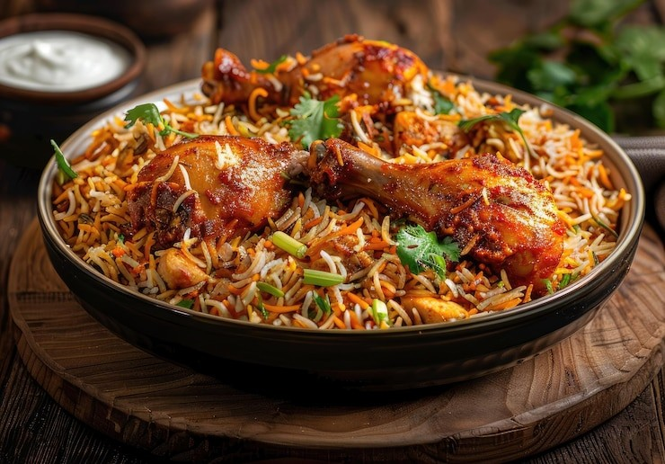

Chicken Biryani

Category: Dinner
Prep Time: 30 mins | Cook Time: 45 mins
Servings: 4–5
Ingredients
- 500g Chicken (cut into pieces)
- 2 cups Basmati Rice
- 2 Onions (sliced)
- 1 Tomato (chopped)
- 1/2 cup Curd (Yogurt)
- 2 tbsp Ginger-Garlic Paste
- Whole Spices (cinnamon, cardamom, cloves, bay leaf)
- 1/2 tsp Turmeric Powder
- 1 tsp Red Chili Powder
- 1 tsp Biryani Masala / Garam Masala
- Fresh Coriander & Mint Leaves (chopped)
- Saffron soaked in milk (optional)
- Salt to taste
- 4 tbsp Oil or Ghee
- Water as required
Instructions
- Wash and soak basmati rice for 20–30 mins. Cook till 70% done and set aside.
- Marinate chicken with curd, turmeric, chili powder, biryani masala, salt, and half ginger-garlic paste for 30 mins.
- Fry onions until golden and crispy. Reserve some for garnish.
- Heat oil in a pan, add whole spices, then remaining ginger-garlic paste, and chopped tomatoes. Cook well.
- Add marinated chicken and cook until it's 80% done. Add chopped mint and coriander.
- Layer rice over the chicken. Add fried onions, saffron milk (if using), and a spoon of ghee.
- Cover tightly and cook on low heat (dum) for 15–20 mins.
- Gently mix before serving. Serve hot with raita or salan.
Leave a Review